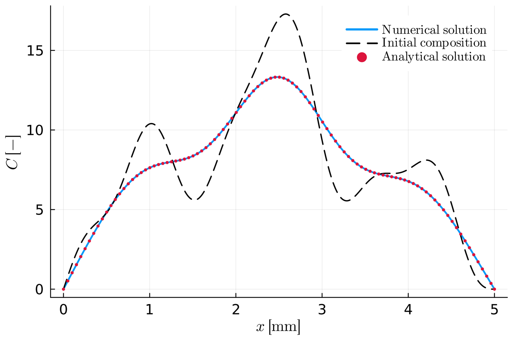
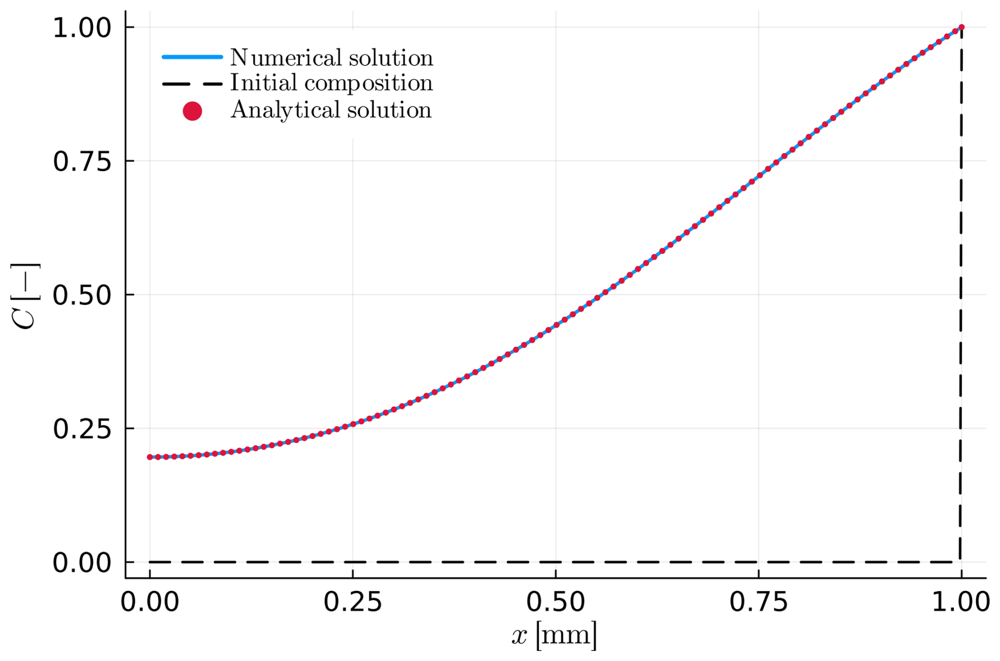
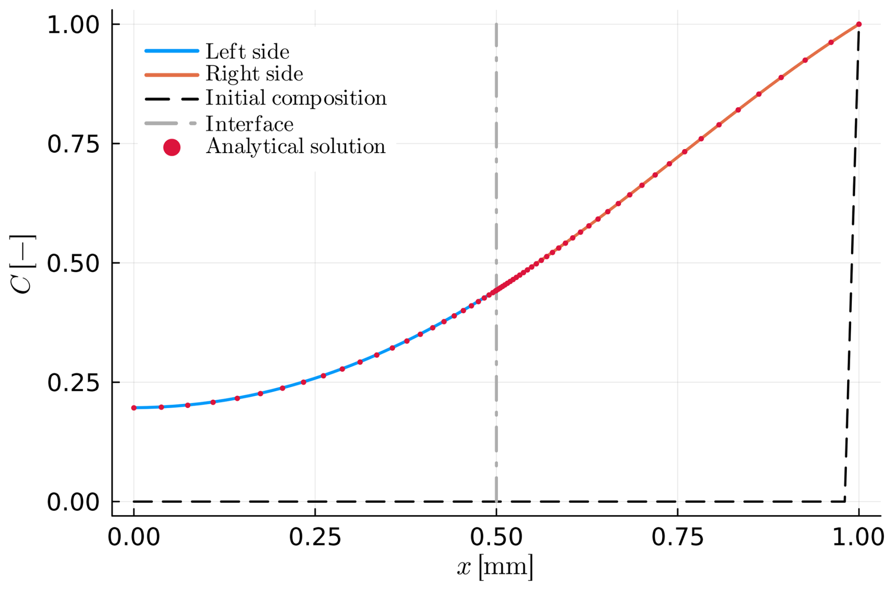
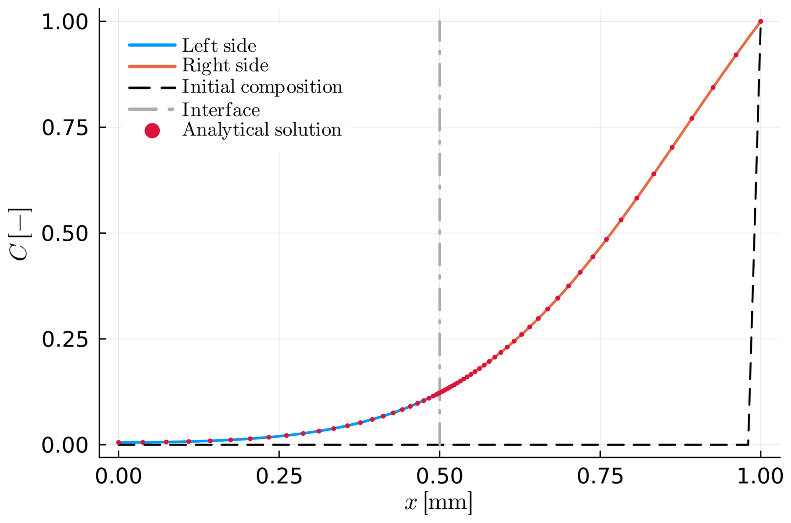
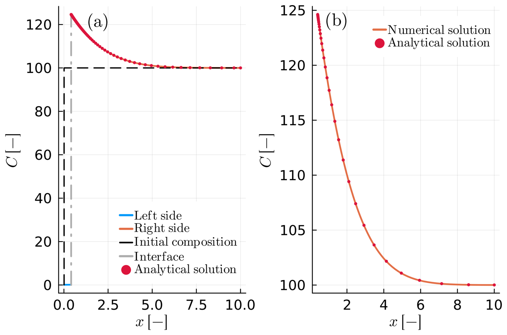
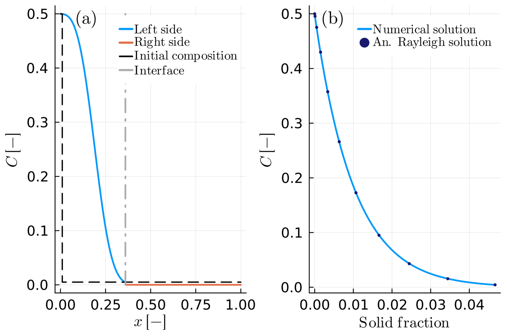

Benchmarks
The examples on this page are each tested against a closed-form analytical or semi-analytical solution (see MovingBoundaryMinerals.Benchmarks and test/) — this is what distinguishes a benchmark from the other worked examples in the package: every curve below has an independently-derived solution plotted alongside the numerical one. For examples that instead show realistic or illustrative output with no closed-form solution to compare against, see Example Gallery.
All figures below are reproduced from [1] (© Author(s) 2025, distributed under the Creative Commons Attribution 4.0 License) by its authors; see List of examples for how every example maps to a paper figure, and the caption of each figure below for which script reproduces it.
A1 — Intracrystalline diffusion within a planar crystal
Diffusion of a sinusoidal initial profile into a planar crystal, against the classical harmonic-function analytical solution (sinusoid_profile).

Figure 2 of [1], reproduced byA1.jl.A2 — Intracrystalline diffusion in a spherical crystal
The same idea in spherical geometry ($n = 3$): zero initial composition, unit boundary composition.

Figure 3 of [1], reproduced byA2.jl.B1 — Intercrystalline diffusion within a spherical diffusion couple
A moving-interface diffusion couple with identical material properties on both sides and $K_D = 1.0$, against the semi-analytical solution for that special case.

Figure 4 of [1], reproduced byB1.jl.B2 — Diffusion couple with time-evolving diffusivity
The same setup as B1, but with a diffusivity that evolves through a cooling history, validating the time-transformation technique this uses internally.

Figure 5 of [1], reproduced byB2.jl.B4 — Spherical crystal growth via Rayleigh fractionation
Growth of a spherical crystal in the $D^A \ll D^B$ limit, against the Rayleigh-fractionation analytical solution — both the composition profile and the interface position vs. solid fraction.
Figure 6 of [1], reproduced by B4.jl.
B5 — Planar growth from a melt
Planar crystal growth from a melt reservoir, with a zoomed-in view of the melt-side profile compared against the analytical solution.

Figure 7 of [1], reproduced byB5.jl.C1 — Rayleigh fractionation via the total mass-balance condition
The same physical setup as B4 — including the Rayleigh-fractionation analytical solution — solved with the total mass-balance interface condition (set_inner_bc_mb!) instead of the flux-balance one, to confirm the two formulations agree.

Figure C1 of [1], reproduced byC1.jl.B3 isn't part of the paper and has no corresponding figure here yet — see List of examples.